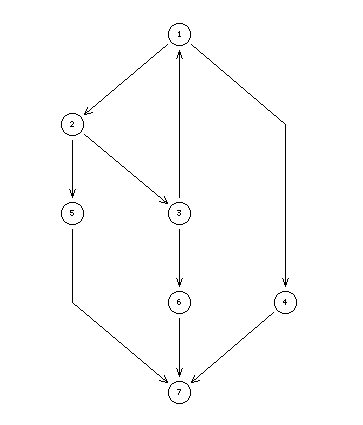

Berge's suggestion for hyperkernels
Absorbent kernels, Grundy functions, hyperkernel approach
X = {1,2,3,4,5,6,7}, L = {0,100}
S = {(1,2), (2,3), (3,1), (1,4), (2,5), (3,6), (4,7), (5,7), (6,7)}

The example is used by Cl. Berge for illustrating the case of a Nim game for which neither a Grundy function nor a kernel exists. This is due to the presence of the initial tricycle {1,2,3}.
The tricycle {1,2,3} gives nevertheless the actual solution of the game. Similarly, the corresponding hyperkernel { _1_2_3_, 7} gives a potential good choice.
Cl. Berge, The Theory of Graphs, (Original in French, Théorie des graphes et ses applications. Dunod, Paris, 1958). Reprint of the English translation 1962, Dower, 2001, p. 54